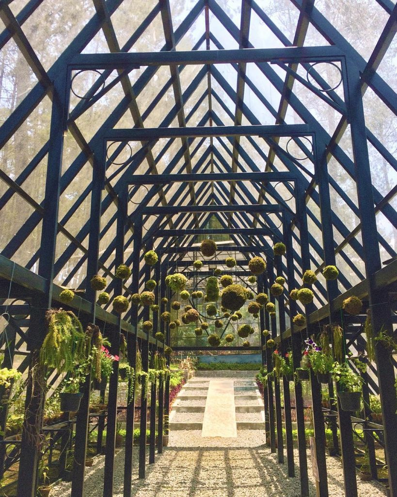
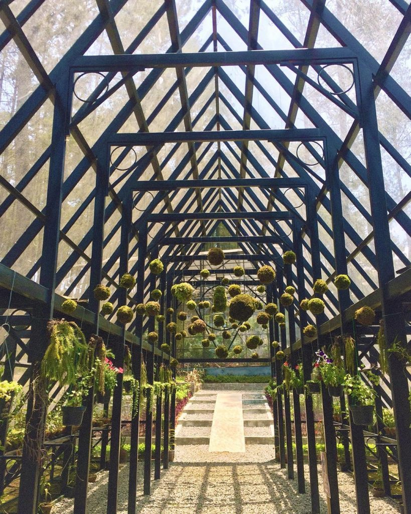

Orchid Forest Cikole is projected to be the largest orchid forest in Indonesia. Its location is surrounded by 12 hectares of protected forest filled with pine trees. There are now 157 species of orchids from Indonesia, United States, Peru and Venezuela. There are also rare orchids such as black orchids, semar bag orchids and so on.
To enjoy the beautiful and serene scenery of the pine tree forest, visitors could walk on a wooden bridge that connects between pine trees. The length reaches 125 meters with a height of more than 20 meters. This bridge has become a spot for photos that are commonly visited by visitors.
Paphio Terace stage, one of the main facilities there, has the concept of a showroom in the open air. The stage blends with nature. This performance area was once the location of an international music festival, the Lala Festival.
 
